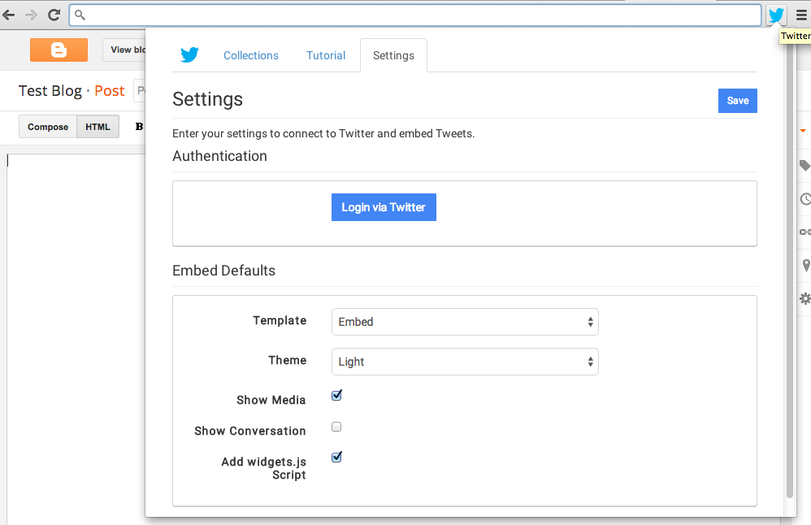
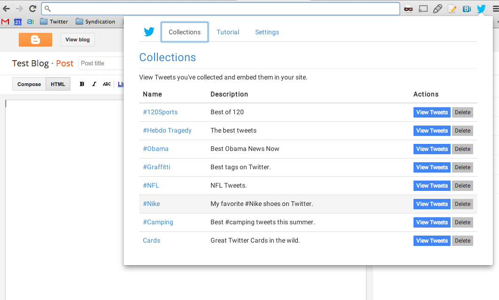

View Tweets you've collected and embed them in your site.
| Name | Description | Actions |
|---|
| Tweet | Actions | |||
|---|---|---|---|---|
| Select | User 1 | Tweet 1 | Do it | |
| Select | User 2 | Tweet 2 | Do it |
Welcome to the Twitter Reporter Plugin!
This tutorial will help you use the tool to curate and embed tweets directly from your Chrome browser.
Setup
To use this tool, you must first connect to your Twitter account. To access the tool's menu,
click on the blue bird icon in your browser menu (to the right of the browser location):

Once the pane is open, go to the settings tab and
click on the "Login via Twitter" button. This will take you to Twitter to login.
 Authorize access and copy the PIN. Be sure to return to the settings page
and complete the flow by submitting your PIN:
Authorize access and copy the PIN. Be sure to return to the settings page
and complete the flow by submitting your PIN:

Curate Tweets
On each tweet in twitter.com, you will now see a "+" icon below the tweet.
 Clicking on the icon will show you collections you can add it to. You can either select multiple
collections, or choose a single collection by clicking on the name.
Clicking on the icon will show you collections you can add it to. You can either select multiple
collections, or choose a single collection by clicking on the name.
 If you want to create a new collection, click on "Create New Collection".
If you want to create a new collection, click on "Create New Collection".
Embed/manage Tweets
To view your collections, click on the blue bird icon in your browser menu (to the right of the browser location):

Click on the collection with the tweets you want to embed. Choose the tweets to embed with the checkboxes to the left.
 Once you have selected the tweets, click on the "Embed" button at the top right. This injects the tweet HTML into
the cursor of the page. Also, this copies the same tweet HTML into the clipboard, so you can use "Control-V" to paste
into the page.
Once you have selected the tweets, click on the "Embed" button at the top right. This injects the tweet HTML into
the cursor of the page. Also, this copies the same tweet HTML into the clipboard, so you can use "Control-V" to paste
into the page.
Settings
Enter your settings to connect to Twitter and embed Tweets.